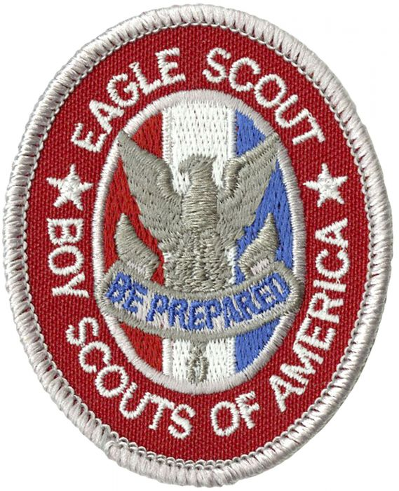
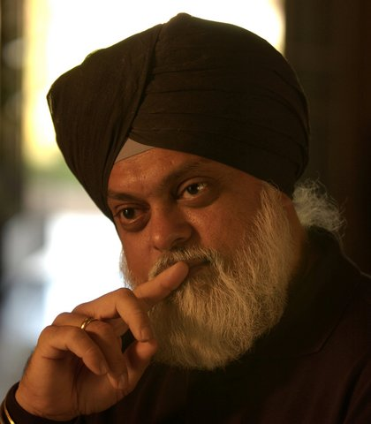

Reed Scardino
My name is Reed Scardino, and I currently a file clerk and a concession stand worker. I currently attend the University
of California, Riverside, and major in history. I am an Eagle Scout in the Boy Scouts of America, and I stay active by participating in
Intramural Sports on campus at UCR. I work at The Soni Law Firm, which is Law firm that practices law in the Patent and Trademark field,
as well as Real Estate Law. My role at the law firm is to organize all physical copies of the files. In addition, I help maintian workspace organization
and cleanliness, and I personally deliver mail and physical documents for the firm. In addition to working as a file clerk, I also work at dodger stadium.
I work as a concessions stand worker, working at several different stands throughout the season. My responsibilities range from cooking to cleaning the stands
and helping to ensure customer satisfaction by asking if their experience was enjoyable. I have worked at the Soni LAw firm for over 4 years, and I have worked
at Dodger Stadium for 2 years now. I hope to continue working at The Soni Law Firm, and aspire to become an attorney myself. In addition to hoping to
study Law, I also hope to invest in stocks immediately after college. I am still deciding whether I should pursue a law degree in Louisiana
or in California.
Experience
File Clerk
• Separated and organized physical documents
• Maintained workspace cleanliness
• Delivered documents and materials for attornies
Eagle Scout
• Participated in and led several hundred hours of community service projects• Taught BSA Approved survival and life skills to young Scouts
• Was a Camp Councilor at Cherry Valley for two weeks in 2016
• Helped Rebuild camp sites and led several camping trips with the Boy Scouts
Education
University of California Riverside
Saint Francis High School
Portfolio



